전기기사 (2013-06-02 기출문제)
1과목: 전기자기학
1. 무한히 넓은 도체 평면판에 면밀도 σ[C/m2]의 전하가 분포되어 있는 경우 전력선은 면(面)에 수직으로 나와 평행하게 발산한다. 이 평면의 전계의 세기는 몇 [V/m]인가?
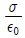
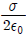
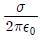
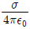
(정답률: 68%)

2. 균일하게 원형단면을 흐르는 전류 I[A]에 의한, 반지름 a[m], 길이 ℓ[m], 비투자율 μs인 원통도체의 내부 인덕턴스는 몇 [H] 인가?
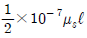
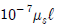
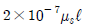
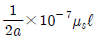
(정답률: 63%)
3. 유전체에 대한 경계조건에 설명이 옳지 않은 것은?
- 표면전하 밀도란 구속전하의 표면밀도를 말하는 것이다.
- 완전 유전체 내에서는 자유전하는 존재하지 않는다.
- 경계면에 외부전하가 있으면, 유전체의 내부와 외부의 전하는 평형 되지 않는다.
- 특수한 경우를 제외하고 경계면에서 표면전하 밀도는 영(zero)이다.
(정답률: 43%)
4. 그림과 같이 정전용량이 C0[F]가 되는 평행판 공기 콘덴서에 판면적의 1/2 되는 공간에 비유전률이 εs인 유전체를 채웠을 때 정전용량은 몇 [F] 인가?
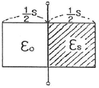
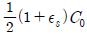
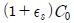
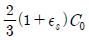
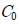
(정답률: 78%)
5. 정전류가 흐르고 있는 무한 직선도체로부터 수직으로 0.1[m]만큼 떨어진 점의 자계의 크기가 100[A/m]이면 0.4[m]만큼 떨어진 점의 자계의 크기[A/m]는?
- 10
- 25
- 50
- 100
(정답률: 83%)
6. 그림과 같이 전류가 흐르는 반원형 도선이 평면 z=0상에 놓여 있다. 이 도선이 자속밀도 B=0.8ax-0.7ay+az[Wb/m2]인 균일자계 내에 놓여 있을 때 도선의 직선부분에 작용하는 힘은 몇 [N] 인가?
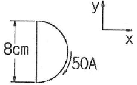
- 4ax+3.2az
- 4ax-3.2az
- 5ax+3.5az
- -5ax+3.5az
(정답률: 64%)
7. 전하 q[C]이 공기 중의 자계 H [AT/m]에 수직 방향으로 v[m/s] 속도로 돌입하였을 때 받는 힘은 몇 [N]인가?
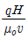
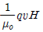
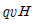
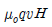
(정답률: 71%)
8. 면적이 S[m2]이고 극간의 거리가 d[m]인 평행판 콘덴서에 비유전률 εs의 유전체를 채울 때 정전용량은 몇[F] 인가? (단, 진공의 유전률은 ε0이다.)
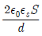
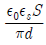
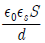
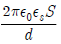
(정답률: 77%)
9. 변위 전류와 가장 관계가 깊은 것은?
- 반도체
- 유전체
- 자성체
- 도체
(정답률: 84%)
10. 압전기 현상에서 분극이 응력과 같은 방향으로 발생하는 현상을 무슨 효과라 하는가?
- 종효과
- 횡효과
- 역효과
- 간접효과
(정답률: 73%)
11. 자화의 세기로 정의 할 수 있는 것은?
- 단위면적당 자위밀도
- 단위체적당 자기모멘트
- 자력선 밀도
- 자화선 밀도
(정답률: 74%)
12. 전선의 체적을 동일하게 유지하면서 2배의 길이로 늘였을 때 저항은 어떻게 되는가?
- 1/2로 줄어든다.
- 동일하다.
- 2배로 증가한다.
- 4배로 증가한다.
(정답률: 66%)
13. 평면 도체로부터 수직거리 a[m]인 곳에 점전하 Q[C]가 있다. Q와 평면도체 사이에 작용하는 힘은 몇 [N]인가? (단, 평면도체 오른편을 유전율 ε의 공간이라 한다.)
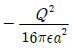
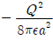
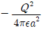
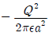
(정답률: 78%)
14. 무한평면도체에서 d[m]의 거리에 있는 반경 a[m]의 구도체와 평면도체 사이의 정전용량은 몇 [F] 인가? (단, a ≪ d 이다.)
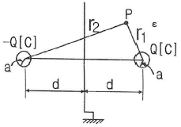
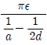
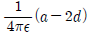
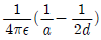
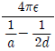
(정답률: 52%)
15. 그림과 같이 권수 50회이고 전류 1[mA]가 흐르고 있는 직사각형 코일이 0.1[Wb/m2]의 평등자계 내에 자계와 30°로 기울어 놓았을 때 이 코일의 회전력[Nㆍm]은? (단, a=10[cm], b=15[cm]이다.)
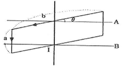
- 3.74×10-5
- 6.49×10-5
- 7.48×10-5
- 11.22×10-5
(정답률: 47%)
16. 반지름 a[m]이고, N=1회의 원형코일에 I[A]의 전류가 흐를 때 그 코일의 중심점에서의 자계의 세기 [AT/m]는?
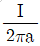
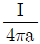
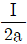
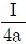
(정답률: 67%)
17. 공극을 가진 환상솔레노이드에서 총 권수 N회, 철심의 투자율 μ[H/m], 단면적 S[m2], 길이 ℓ[m]이고 공극의 길이가 δ[m]일 때 공극부에 자속밀도 B[Wb/m2]을 얻기 위해서는 몇 [A]의 전류를 흘려야 하는가?
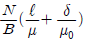
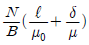
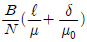
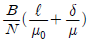
(정답률: 59%)
18. 자계의 벡터퍼텐셜을 A [Wb/m]라 할 때 도체 주위에서 자계 B [Wb/m2]가 시간적으로 변화하면 도체에 생기는 전계의 세기 E [V/m]은?
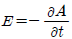
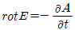
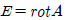
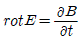
(정답률: 71%)
19. 자화율(magnetic susceptibility) x는 상자성체에서 일반적으로 어떤 값을 갖는가?
- x = 0
- x = 1
- x < 0
- x > 0
(정답률: 74%)
20. 비투자율 μs=800, 원형 단면적이 s=10[cm2], 평균 자로 길이 ㅣ=8π×10-2[m]의 환상 철심에 600회의 코일을 감고 이것에 1[A]의 전류를 흘리면 내부의 자속은 몇 [Wb]인가?
- 1.2×10-3
- 1.2×10-5
- 2.4×10-3
- 2.4×10-5
(정답률: 70%)
2과목: 전력공학
21. 표피효과에 대한 설명으로 옳은 것은?
- 표피효과는 주파수에 비례한다.
- 표피효과는 전선의 단면적에 반비례한다.
- 표피효과는 전선의 비투자율에 반비례한다.
- 표피효과는 전선의 도전률에 반비례한다.
(정답률: 74%)
22. 보일러에서 흡수 열량이 가장 큰 곳은?
- 절탄기
- 수냉벽
- 과열기
- 공기예열기
(정답률: 61%)
23. 다음 중 전력원선도에서 알 수 없는 것은?
- 전력
- 조상기 용량
- 손실
- 코로나 손실
(정답률: 82%)
24. 배전선로의 주상변압기에서 고압측-저압측에 주로 사용되는 보호장치의 조합으로 적합한 것은?
- 고압측: 프라이머리 컷아웃 스위치, 저압측: 캐치홀더
- 고압측: 캐치홀더, 저압측: 프라이머리 컷아웃 스위치
- 고압측: 리클로저, 저압측: 라인퓨즈
- 고압측: 라인퓨즈, 저압측: 리클로저
(정답률: 70%)
25. 송전계통의 한 부분이 그림에서와 같이 3상변압기로 1차측은 △로, 2차측은 Y로 중성점이 접지되어 있을 경우, 1차측에 흐르는 영상전류는?
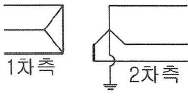
- 1차측 변압기 내부와 1차측 선로에서 반드시 0 이다.
- 1차측 선로에서 ∞ 이다.
- 1차측 변압기 내부에서는 반드시 0 이다.
- 1차측 선로에서 반드시 0 이다.
(정답률: 61%)
26. 조정지 용량 100000[m3], 유효낙차 100[m]인 수력 발전소가 있다. 조정지의 전 용량을 사용하여 발생될 수 있는 전력량은 약 몇 [kWh]인가? (단, 수차 및 발전기의 종합효율을 75%로 하고 유효낙차는 거의 일정하다고 본다.)
- 20417
- 25248
- 30448
- 42540
(정답률: 45%)
27. 저압 뱅킹 배선방식에서 캐스케이딩 이란 무엇인가?
- 변압기의 전압 배분을 자동으로 하는 것
- 수전단 전압이 송전단 전압보다 높아지는 현상
- 저압선에 고장이 생기면 건전한 변압기의 일부 또는 전부가 차단되는 현상
- 전압 동요가 일어나면 연쇄적으로 파동치는 현상
(정답률: 79%)
28. 공기차단기(ABB)의 공기 압력은 일반적으로 몇 [kg/cm2]정도 되는가?
- 5~10
- 15~30
- 30~45
- 45~55
(정답률: 69%)
29. 송전선로의 일반회로정수가 A=0.7, C=j1.95×10-3, D=0.9 라 하면 B의 값은 약 얼마인가?
- j90
- -j90
- j190
- -j190
(정답률: 63%)
30. 정격전압 66[kV]인 3상3선식 송전선로에서 1선의 리액턴스가 15[Ω]일 때 이를 100[MVA]기준으로 환산한 %리액턴스는?
- 17.2
- 34.4
- 51.6
- 68.8
(정답률: 73%)
31. 공장이나 빌딩에 200[V] 전압을 400[V]로 승압하여 배전을 할 때, 400[V] 배전과 관계없는 것은?
- 전선 등 재료의 절감
- 전압변동률의 감소
- 배선의 전력손실 경감
- 변압기 용량의 절감
(정답률: 56%)
32. 변압기 보호용 비율차동계전기를 사용하여 △-Y 결선의 변압기를 보호하려고 한다. 이 때 변압기 1, 2차측에 설치하는 변류기의 결선 방식은? (단, 위상 보정기능이 없는 경우이다.)
- △-△
- △-Y
- Y-△
- Y-Y
(정답률: 74%)
33. 송전계통의 안정도 향상 대책이 아닌 것은?
- 계통의 직렬 리액턴스를 증가시킨다.
- 전압 변동을 적게 한다.
- 고장시간, 고장전류를 적게 한다.
- 고속도 재폐로 방식을 채용한다.
(정답률: 82%)
34. 부하역률이 0.6인 경우, 전력용 콘덴서를 병렬로 접속하여 합성역률을 0.9로 개선하면 전원측 선로의 전력손실은 처음 것의 약 몇 % 로 감소되는가?
- 38.5
- 44.4
- 56.6
- 62.8
(정답률: 66%)
35. 부하의 불평형으로 인하여 발생하는 각 상별 불평형 전압을 평형되게 하고 선로손실을 경감시킬 목적으로 밸런서가 사용된다. 다음 중 이 밸런서의 설치가 가장 필요한 배전 방식은?
- 단상 2선식
- 3상 3선식
- 단상 3선식
- 3상 4선식
(정답률: 71%)
36. 원자로의 감속재가 구비하여야 할 사항으로 적합하지 않은 것은?
- 원자량이 큰 원소일 것
- 중성자의 흡수 단면적이 적을 것
- 중성자와의 충돌 확률이 높을 것
- 감속비가 클 것
(정답률: 64%)
37. 다음 중 모선보호용 계전기로 사용하면 가장 유리한 것은?
- 재폐로계전기
- 과전류계전기
- 역상계전기
- 거리계전기
(정답률: 48%)
38. 송전선의 전압변동률을 나타내는 식
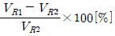
에서 VR1은 무엇인가?- 부하시 수전단 전압
- 무부하시 수전단 전압
- 부하시 송전단 전압
- 무부하시 송전단 전압
(정답률: 65%)
39. 단도체 대신 같은 단면적의 복도체를 사용할 때 옳은 것은?
- 인덕턴스가 증가한다.
- 코로나 개시전압이 높아진다.
- 선로의 작용정전용량이 감소한다.
- 전선 표면의 전위경도를 증가시킨다.
(정답률: 76%)
40. 송배전선로의 고장전류 계산에서 영상 임피던스가 필요한 경우는?
- 3상 단락 계산
- 선간 단락 계산
- 1선 지락 계산
- 3선 단선 계산
(정답률: 80%)
3과목: 전기기기
41. 3상 동기발전기의 매극 매상의 슬롯수를 3이라 할때 분포권 계수는?
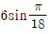
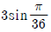
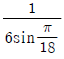
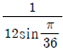
(정답률: 78%)
42. 1차 Y, 2차 △로 결선하고 1차에 선간전압 3300V를 가하였을 때에 무부하 2차 선간전압은 몇 [V]인가? (단, 전압비는 30:1 이다.)(문제오류로 가답안 발표시 2번으로 정답이 발표도었지만 전항 정답처리되었습니다. 여기서는 2번을 누르면 정답 처리 됩니다.)
- 110
- 190.5
- 330.5
- 380.5
(정답률: 73%)
43. 권수비 a=6600/220, 60Hz, 변압기의 철심 단면적 0.02m2, 최대자속밀도 1.2Wb/m2 일 때 1차 유기기전력은 약 몇 [V] 인가?
- 1407
- 3521
- 42198
- 49814
(정답률: 64%)
44. 단상 유도전압조정기에서 1차 전원전압을 V1이라하고, 2차의 유도전압을 E2라고 할 때 부하 단자전압을 연속적으로 가변할 수 있는 조정 범위는?
- 0 ~V1까지
- V1 + E2까지
- V1 - E2까지
- V1 + E2에서 V1-E2
(정답률: 67%)
45. 10 kVA, 2000/100V, 변압기에서 1차에 환산한 등가 임피던스가 6.2+j7Ω 일 때 % 리액턴스 강하는?
- 2.75
- 1.75
- 0.75
- 0.55
(정답률: 68%)
46. 3상 권선형 유도전동기의 전부하 슬립이 4%, 2차 1상의 저항이 0.3Ω 이다. 이 유도전동기의 기동 토크를 전부하 토크와 같도록 하기 위해 외부에서 2차에 삽입해야 할 저항의 크기는 몇 [Ω]인가?
- 2.8
- 3.5
- 4.8
- 7.2
(정답률: 55%)
47. 1차 및 2차 정격전압이 같은 2대의 변압기가 있다. 그 용량 및 임피던스 강하가 A 변압기는 5kVA, 3%, B 변압기는 20kVA, 2% 일 때 이것을 병렬 운전하는 경우 부하를 분담하는 비(A:B)는?
- 1:4
- 1:6
- 2:3
- 3:2
(정답률: 57%)
48. 브러시의 위치를 이동시켜 회전방향을 역회전 시킬 수 있는 단상 유도전동기는?
- 반발 기동형 전동기
- 세이딩코일형 전동기
- 분상기동형 전동기
- 콘덴서 전동기
(정답률: 62%)
49. 직류 발전기에서 섬락이 생기는 가장 큰 원인은?
- 장시간 운전
- 부하의 급변
- 경부하 운전
- 회전속도 저하
(정답률: 66%)
50. 단상반파 정류회로에서 실효치 E와 직류 평균치 Ed0와의 관계식으로 옳은 것은?
- Ed0 = 0.90E[V]
- Ed0 = 0.81E[V]
- Ed0 = 0.67E[V]
- Ed0 = 0.45E[V]
(정답률: 71%)
51. 유도 전동기로 동기 전동기를 기동하는 경우, 유도 전동기의 극수는 동기기의 그것보다 2극 적은 것을 사용한다. 옳은 이유는? (단, s는 슬립이며 Ns 동기속도이다.)
- 같은 극수로는 유도기는 동기 속도보다 sNs 만큼 늦으므로
- 같은 극수로는 유도기를 동기 속도보다 (1-s)Ns 만큼 늦으므로
- 같은 극수로는 유도기는 동기 속도보다 sNs 만큼 빠르므로
- 같은 극수로는 유도기는 동기 속도보다 (1-s)Ns 만큼 빠르므로
(정답률: 70%)
52. 직류 전동기에서 정출력 가변속도의 용도에 적합한 속도제어법은?
- 일그너제어
- 계자제어
- 저항제어
- 전압제어
(정답률: 57%)
53. 속도 특성곡선 및 토크 특성곡선을 나타낸 전동기는?
- 직류 분권전동기
- 직류 직권전동기
- 직류 복권전동기
- 타여자 전동기
(정답률: 60%)
54. 사이클로 컨버터(cyclo converter)란?
- 실리콘 양방향성 소자이다.
- 제어정류기를 사용한 주파수 변환기이다.
- 직류 제어소자이다.
- 전류 제어소자이다.
(정답률: 64%)
55. 포화하고 있지 않은 직류발전기의 회전수가 4배로 증가되었을 때 기전력을 전과 같은 값으로 하려면 여자를 속도 변화 전에 얼마로 하여야 하는가?
- 1/2
- 1/3
- 1/4
- 1/8
(정답률: 74%)
56. 다음 중 3상 권선형 유도 전동기의 기동법은?
- 2차 저항법
- 전전압 기동법
- 기동 보상기법
- Y-△ 기동법
(정답률: 71%)
57. 동기 리액턴스 Xs=10[Ω], 전기자 저항ra=0.1[Ω] 인 Y결선 3상 동기발전기가 있다. 1상의 단자전압은 V=4000V 이고 유기 기전력 E=6400V 이다. 부하각 δ=30° 라고 하면 발전기의 3상 출력[kW]은 약 얼마인가?
- 1250
- 2830
- 3840
- 4650
(정답률: 58%)
58. 다음 그림은 어떤 전동기의 1차측 결선도인가?
- 모노사이클릭형 전동기
- 반발 유도전동기
- 콘덴서 전동기
- 반발기동형 단상 유도전동기
(정답률: 63%)
59. 직류 직권 전동기가 전차용에 사용되는 이유는?
- 속도가 클 때 토크가 크다.
- 토크가 클 때 속도가 적다.
- 기동토크가 크고 속도는 불변이다.
- 토크는 일정하고 속도는 전류에 비례한다.
(정답률: 56%)
60. 10000 kVA, 6000 V, 60 Hz, 24극, 단락비 1.2인 3상 동기발전기의 동기 임피던스[Ω]는?
- 1
- 3
- 10
- 30
(정답률: 46%)
4과목: 회로이론 및 제어공학
61. 시간 지정이 있는 특수한 시스템이 미분 방정식 로 표시될 때 이 시스템의 함수는?
(정답률: 52%)
62. 일정 입력에 대해 잔류 편차가 있는 제어계는?
- 비례 제어계
- 적분 제어계
- 비례 적분 제어계
- 비례 적분 미분 제어계
(정답률: 65%)
63. 그림과 같은 논리회로에서 출력 F의 값은?
- A
- (A+B)C
(정답률: 76%)
64. 그림과 같은 요소는 제어계의 어떤 요소인가?
- 적분요소
- 미분요소
- 1차 지연요소
- 1차 지연 미분요소
(정답률: 61%)
65. 개루프 전달함수가 다음과 같은 계에서 단위속도 입력에 대한 정상 편차는?
- 0.2
- 0.25
- 0.33
- 0.5
(정답률: 54%)
66. 보상기 가 진상 보상기가 되기 위한 조건은?
- α = 0
- α = 1
- α < 1
- α >1
(정답률: 57%)
67. 다음 안정도 판별법 중 G(s)H(s)의 극점과 영점이 우반평면에 있을 경우 판정 불가능한 방법은?
- Routh – Hurwitz 판별법
- Bode 선도
- NYquist 판별법
- 근궤적법
(정답률: 56%)
68. 의 개루프 전달함수에 대한 Nyquist 안정도 판별에 대한 설명으로 옳은 것은?
- K1, T1 및 T2의 값에 대하여 조건부 안정
- K1, T1 및 T2의 값에 관계없이 안정
- K1 값에 대하여 조건부 안정
- K1, T1 및 T2의 모든 양의 값에 대하여 안정
(정답률: 52%)
69. 그림의 회로에서 출력전압 V0는 입력전압 Vi와 비교할 때 위상 변화는?
- 위상이 뒤진다.
- 위상이 앞선다.
- 동상이다.
- 낮은 주파수에서는 위상이 뒤떨어지고 높은 주파수에서는 앞선다.
(정답률: 53%)
70. 개루프 전달함수 의 이탈점에 해당되는 것은?
- 1
- -1
- 2
- -2
(정답률: 49%)
71. RLC 직렬회로에서 전원 전압을 V 라 하고, L, C 에 걸리는 전압을 각각 VL및 VC라면 선택도 Q 는?
(정답률: 50%)
72. 전원의 내부 임피던스가 순저항 R과 리액턴스 X로 구성되고 외부에 부하저항 RL 을 연결하여 최대전력을 전달하려면 RL 의 값은?
(정답률: 69%)
73. 그림과 같은 회로와 쌍대(dual)가 될 수 있는 회로는?
(정답률: 67%)
74. 그림과 같은 π형 회로에 있어서 어드미턴스 파라미터 중 Y21은 어느 것인가?
- Ya
- -Yb
- Ya+Yb
- Yb+Yc
(정답률: 58%)
75. 그림의 회로에서 절점전압 Va[V]와 지로전류 Ia[A]의 크기는?
(정답률: 38%)
76. 역률각이 45°인 3상 평형부하에 상순이 a-b-c 이고 Y결선된 회로에 Va=220[V]인 상전압을 가하니 Ia=10[A]의 전류가 흘렀다. 전력계의 지시값[W]은?
- 1555.63[W]
- 2694.44[W]
- 3047.19[W]
- 3680.67[W]
(정답률: 27%)
77. 저항 R[Ω] 3개를 Y로 접속한 회로에 전압 200[V]의 3상 교류전원을 인가시 선전류가 10[A]라면 이 3개의 저항을 △로 접속하고 동일전원을 인가시 선전류는 몇 [A]인가?
- 10[A]
- 10√3[A]
- 30[A]
- 30√3[A]
(정답률: 52%)
78. 선로의 단위 길이당 분포 인덕턴스, 저항, 정전용량, 누설 컨덕턴스를 각각 L, R, C, G 라 하면 전파정수는?
(정답률: 67%)
79. 그림의 RL 직렬회로에서 스위치를 닫은 후 몇 초 후에 회로의 전류가 10[mA]가 되는가?
- 0.011[sec]
- 0.016[sec]
- 0.022[sec]
- 0.031[sec]
(정답률: 57%)
80. 전류의 대칭분을 I0, I1, I2유기 기전력 및 단자전압의 대칭분을 Ea, Eb, Ec 및 V0, V1, V2라 할 때 3상 교류발전기의 기본식 중 정상분 V1 값은? (단, Z0, Z1, Z2는 영상, 정상, 역상 임피던스이다.)
- -Z0I0
- -Z2I2
- Ea-Z1I1
- Eb-Z2I2
(정답률: 70%)
5과목: 전기설비기술기준 및 판단기준
81. 사용전압 35kV인 특고압 가공전선로에 특고압 절연 전선을 사용한 경우 전선의 지표상 높이는 최소 몇 [m]이상이어야 하는가?
- 13.72
- 12.04
- 10
- 8
(정답률: 53%)
82. 전압 구분에서 고압에 해당되는 것은?(2021년 개정된 KEC 규정 적용됨)
- 직류는 1.5kV를 초과하고 7kV 이하인것, 교류는 1kV를 초과하고 7kV 이하인것
- 직류는 1kV를 초과하고 7kV 이하인것, 교류는 1kV를 초과하고 7kV 이하인것
- 직류는 1kV를 초과하고 7kV 이하인것, 교류는 600V를 초과하고 7kV 이하인것
- 직류는 600V를 초과하고 7kV 이하인것, 교류는 800V를 초과하고 7kV 이하인것
(정답률: 59%)
83. 금속 덕트 공사에 의한 저압 옥내배선에서, 금속 덕트에 넣은 전선의 단면적의 합계는 덕트 내부 단면적의 얼마 이하이어야 하는가?
- 20％ 이하
- 30％ 이하
- 40％ 이하
- 50％ 이하
(정답률: 63%)
84. 출퇴표시등 회로에 전기를 공급하기 위한 변압기는 1차측 전로의 대지전압과 2차측 전로의 사용전압이 각 각 몇 [V]이하인 절연 변압기이어야 하는가?(오류 신고가 접수된 문제입니다. 반드시 정답과 해설을 확인하시기 바랍니다.)
- 대지전압 : 150V, 사용전압 : 30V
- 대지전압 : 150V, 사용전압 : 60V
- 대지전압 : 300V, 사용전압 : 30V
- 대지전압 : 300V, 사용전압 : 60V
(정답률: 52%)
85. 고압 가공전선로의 가공지선으로 나경동선을 사용하는 경우의 지름은 몇 [mm] 이상이어야 하는가?
- 3.2
- 4.0
- 5.5
- 6.0
(정답률: 59%)
86. 최대사용전압 154kV 중성점 직접 접지식 전로에 시험전압을 전로와 대지사이에 몇 [kV]를 연속으로 10분간 가하여 절연내력을 시험하였을 때 이에 견디어야 하는가?
- 231
- 192.5
- 141.68
- 110.88
(정답률: 57%)
87. 일정용량 이상의 특고압용 변압기에 내부고장이 생겼을 경우, 자동적으로 이를 전로로부터 자동차단하는 장치 또는 경보장치를 시설해야 하는 뱅크 용량은?
- 1000KVA 이상, 5000KVA 미만
- 5000KVA 이상, 10000KVA 미만
- 10000KVA 이상, 15000KVA 미만
- 15000KVA 이상, 20000KVA 미만
(정답률: 52%)
88. 제 3종 접지공사에 사용되는 접지선의 굵기는 공칭 단면적 몇 [mm2]이상의 연동선을 사용하여야 하는가?(관련 규정 개정전 문제로 여기서는 기존 정답인 2번을 누르면 정답 처리됩니다. 자세한 내용은 해설을 참고하세요.)
- 0.75
- 2.5
- 6
- 16
(정답률: 52%)
89. 시가지에 시설하는 통신선은 특고압 가공전선로의 지지물에 시설하여서는 아니 된다. 그러나 통신선이 절연전선과 동등 이상의 절연효력이 있고 인장강도 5.26kN 이상의 것 또는 지름 몇 [mm] 이상의 절연전선 또는 광섬유 케이블인 것이면 시설이 가능한가?
- 4
- 4.5
- 5
- 5.5
(정답률: 44%)
90. 무대, 무대마루 밑, 오케스트라 박스, 영사실 기타 사람이나 무대 도구가 첩촉할 우려가 있는 곳에 시설하는 저압 옥내배선ㆍ전구선 또는 이동전선은 사용전압이 몇 [V] 미만이어야 하는가?
- 60
- 110
- 220
- 400
(정답률: 66%)
91. 전기욕기에 전기를 공급하는 전원장치는 전기욕기용으로 내장되어 있는 2차측 전로의 사용전압을 몇 [V]이하로 한정하고 있는가?
- 6
- 10
- 12
- 15
(정답률: 53%)
92. 플로어 덕트 공사에 의한 저압 옥내배선 공사에 적합하지 않은 것은?
- 사용전압 400V 미만일 것
- 덕트의 끝 부분은 막을 것
- 제3종 접지공사를 할 것
- 옥외용 비닐절연전선을 사용할 것
(정답률: 66%)
93. 가공 방식에 의하여 시설하는 직류식 전기 철도용 전차선로는 사용전압이 직류 고압인 경우 어느 곳에 시설하여야 하는가?(오류 신고가 접수된 문제입니다. 반드시 정답과 해설을 확인하시기 바랍니다.)
- 전차선 높이가 5m 이상인 경우 사람이 쉽게 출입할 수 없는 전용 부지 안에 시설
- 사람이 쉽게 출입할 수 있는 전용 부지 안에 시설
- 전기철도의 전용 부지 안에 시설
- 교통이 빈번하지 않은 시가지 외에 시설
(정답률: 46%)
94. 고압 가공전선으로 경동선 또는 내열 동합금선을 사용할 때 그 안전율은 최소 얼마 이상이 되는 이도로 시설하여야 하는가?
- 2.0
- 2.2
- 2.5
- 3.3
(정답률: 60%)
95. 철탑의 강도계산에 사용하는 이상 시 상정하중이 가하여지는 경우의 그 이상 시 상정 하중에 대한 철탑의 기초에 대한 안전율은 얼마 이상 이어야 하는가?
- 1.2
- 1.33
- 1.5
- 2
(정답률: 66%)
96. 저압 가공전선 또는 고압 가공전선이 도로를 횡단할 때 지표상의 높이는 몇 [m] 이상으로 하여야 하는가? (단, 농로 기타 교통이 번잡하지 않은 도로 및 횡단보도교는 제외한다.)
- 4
- 5
- 6
- 7
(정답률: 60%)
97. 저압 옥측전선로의 공사에서 목조 조영물에 시설이 가능한 공사는?
- 금속피복을 한 케이블 공사
- 합성수지관 공사
- 금속관 공사
- 버스덕트 공사
(정답률: 58%)
98. 판단기준 용어에서 “제2차 접근상태” 란 가공전선이 다른 시설물과 접근하는 경우에 그 가공전선이 다른 시설물의 위쪽 또는 옆쪽에서 수평거리로 몇 [m] 미만인 곳에 시설되는 상태를 말하는가?
- 2
- 3
- 4
- 5
(정답률: 53%)
99. 가공전선로의 지지물에 취급자가 오르고 내리는데 사용하는 발판 볼트 등은 원칙적으로는 지표상 몇 [m] 미만에 시설하여서는 아니 되는가?
- 1.2
- 1.5
- 1.8
- 2.0
(정답률: 74%)
100. 다음 전선로에 대한 설명으로 옳은 것은?
- 발전소ㆍ변전소ㆍ개폐소, 이에 준하는 곳, 전기사용장소 상호간의 전선 및 이를지지 하거나 수용하는 시설물
- 발전소ㆍ변전소ㆍ개폐소, 이에 준하는 곳, 전기사용장소 상호간의 전선 및 전차선을지지 하거나 수용하는 시설물
- 통상의 사용 상태에서 전기가 통하고 있는 전선
- 통상의 사용 상태에서 전기를 절연한 전선
(정답률: 51%)
정답은 ""이다.